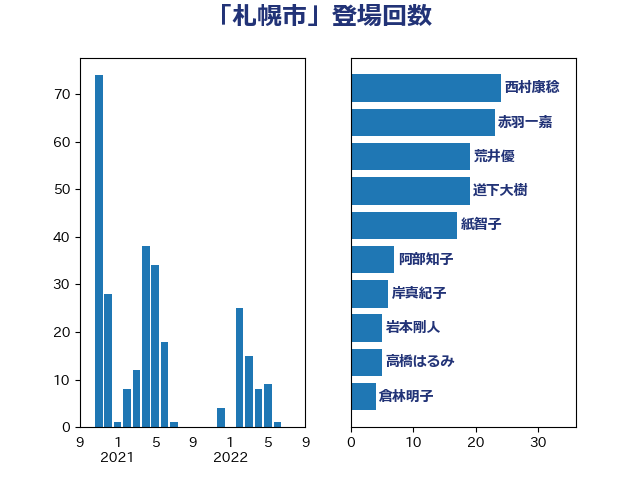

単語「札幌市」

| 西村康稔 | 自由民主党 | 24 回 |
| 赤羽一嘉 | 公明党 | 23 回 |
| 荒井優 | 立憲民主党 | 19 回 |
| 道下大樹 | 立憲民主党 | 19 回 |
| 紙智子 | 日本共産党 | 17 回 |
| 阿部知子 | 立憲民主党 | 7 回 |
| 岸真紀子 | 立憲民主党 | 6 回 |
| 岩本剛人 | 自由民主党 | 5 回 |
| 高橋はるみ | 自由民主党 | 5 回 |
| 倉林明子 | 日本共産党 | 4 回 |
| 稲津久 | 公明党 | 4 回 |
| 長妻昭 | 立憲民主党 | 4 回 |
| おおつき紅葉 | 立憲民主党 | 3 回 |
| 岩渕友 | 日本共産党 | 3 回 |
| 江田憲司 | 立憲民主党 | 3 回 |
| 高橋千鶴子 | 日本共産党 | 3 回 |
| 佐藤英道 | 公明党 | 2 回 |
| 城井崇 | 立憲民主党 | 2 回 |
| 山下芳生 | 日本共産党 | 2 回 |
| 伊藤俊輔 | 立憲民主党 | 1 回 |
| 勝部賢志 | 立憲民主党 | 1 回 |
| 吉良よし子 | 日本共産党 | 1 回 |
| 宮本徹 | 日本共産党 | 1 回 |
| 島村大 | 自由民主党 | 1 回 |
| 平山佐知子 | 無所属 | 1 回 |
| 平木大作 | 公明党 | 1 回 |
| 徳永エリ | 立憲民主党 | 1 回 |
| 斉藤鉄夫 | 公明党 | 1 回 |
| 末松信介 | 自由民主党 | 1 回 |
| 東徹 | 日本維新の会 | 1 回 |
| 柚木道義 | 立憲民主党 | 1 回 |
| 梅村聡 | 日本維新の会 | 1 回 |
| 浦野靖人 | 日本維新の会 | 1 回 |
| 深澤陽一 | 自由民主党 | 1 回 |
| 清水貴之 | 日本維新の会 | 1 回 |
| 源馬謙太郎 | 立憲民主党 | 1 回 |
| 牧義夫 | 立憲民主党 | 1 回 |
| 田村憲久 | 自由民主党 | 1 回 |
| 田村智子 | 日本共産党 | 1 回 |
| 自見はなこ | 自由民主党 | 1 回 |
| 萩生田光一 | 自由民主党 | 1 回 |
| 西村智奈美 | 立憲民主党 | 1 回 |
| 重徳和彦 | 立憲民主党 | 1 回 |
| 音喜多駿 | 日本維新の会 | 1 回 |
| 鳩山二郎 | 自由民主党 | 1 回 |